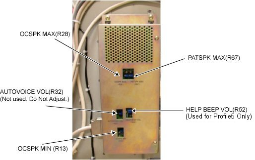
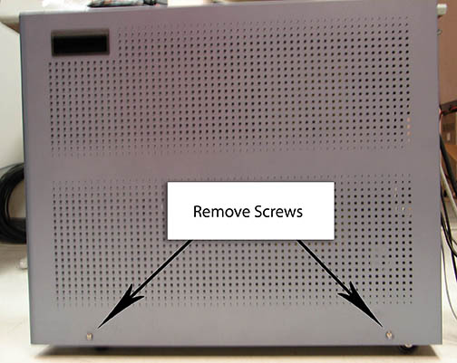

Operating Documentation
Direction 5500113, Rev# 3
Discovery MR750 3.0T Service Methods
Module Version 5.0, Version Date 12/11/09
Operating Documentation |
| Required Persons | Preliminary Reqs | Procedure | Finalization |
|---|---|---|---|
| 2 | 10 mins | 30 mins | 10 mins |
This document describes how to adjust the minimum and maximum volume of the Patient’s voice in the magnet bore, and the volume of the Operator's voice at the keyboard. The following are the document components:
| Item | Qty | Effectivity | Part# | Manufacturer | |
|---|---|---|---|---|---|
| Non-Magnetic Tool Kit | 1 | - | 5112581 | - | |
There are two speaker volume settings to adjust:
Operator Volume - Controls the speaker volume in the Bore (Operator’s voice).
Patient Volume - Controls the volume of the speaker from the keyboard (Patient’s voice).
Illustration 1: Volume on SCIM

The Audio Assembly is located in the Global Operator Cabinet (GOC) .
Volume controls are shown below. Perform the following adjustments:
Maximum Keyboard Speaker Volume R28 (Patient’s Voice)
Minimum Keyboard Speaker Volume R13 (Patient’s Voice)
Maximum Patient Speaker Volume R67 (Operator’s Voice)
| NOTE: | The Minimum Patient Speaker Volume is fixed, and there is no adjustment for it. Do not adjust R32 or R52 (used only for Profile5). |
Illustration 2: Volume Controls on Intercom Board

Remove the two securing screws on the rear of the right side GOC cover.
Slide the cover up and remove it.
Illustration 3: Screws to Remove

At the Operator Workspace keyboard, set the Patient Volume Control to the maximum setting by rotating the volume wheel Up with your finger.
Illustration 4: Volume Controls
While one person speaks into the patient microphone in the magnet bore, the second person should adjust R28 on the Intercom Board for the desired maximum volume at the keyboard speaker. This is an iterative process. Repeat the voice test until the maximum desired level is achieved.
This section explains how to adjust the minimum volume of the Patient’s voice in the magnet bore so the Operator can hear the patient during a scan.
At the Operator Workspace keyboard, set the Patient Volume Control to the minimum setting by rotating the volume wheel Down with your finger.
Illustration 5: Volume Controls
While one person listens at the keyboard speaker (Patient’s Voice), the other person should speak into the patient microphone in the magnet bore.
The person at the keyboard should make minor adjustments to R13 on the Intercom Board for the desired minimum volume at the keyboard speaker. This is an iterative process.
Make a slight adjustment to the potentiometer, test the volume, and repeat the voice test until the desired Minimum Volume level is achieved.
At the Operator Workspace keyboard, set the Patient Volume Control to the maximum setting by rotating the Operators volume wheel Up with your finger.
Illustration 6: Volume Controls
While one person listens at the patient speaker, the other person should speak into the keyboard microphone and adjust R67 on the Intercom Board for the desired maximum volume at the keyboard speaker. This is an iterative process. Repeat the voice test until the maximum desired level is achieved.
If R67 is turned Up too much, a howling sound (feedback) may be heard from the Patient Speaker. Adjust R67 to remove this problem.
Set the Operator Volume to 4, and make sure a howling sound (feedback) is not heard. (A howling sound is often heard when the Operator Volume is set to 4.
Restore the GOC.
Perform a Head and Body scan to ensure the functionality of the system.